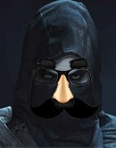
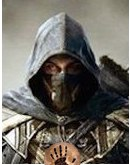

Дорога в Ивантеевку
Вы решили отправиться в Ивантеевку. На полпути вы оглянулись, чтобы посмотреть на город.
К вам подошел какой-то странный человек в капюшоне и сказал:
— Прекрасный вид, не правда ли?....
— Да... "Нужно сделать это быстро... я уверен что это он..."
— Это твой родной город? Вот мой - да...
— Нет, это не мой родной город. Зато это твоя могила...
Быстрым движением руки вы вонзили ядовитый дротик в левую руку Генри.
 — Что?... *Вырубился*
— Что?... *Вырубился*
"Отлично, полдела сделано. Осталось лишь доставить его в штаб"
Вы услышали приближающиеся шаги и решили поспешно скрыться. К цели подошел монах.
— Ох, что же это? Думаю, тебе понадобится помощь...
"Чёрт! Как бы то ни было, лучше не делать лишних убийств, тем более монаха. Так или иначе, цель потеряла память от яда. "
Вернуться в штаб